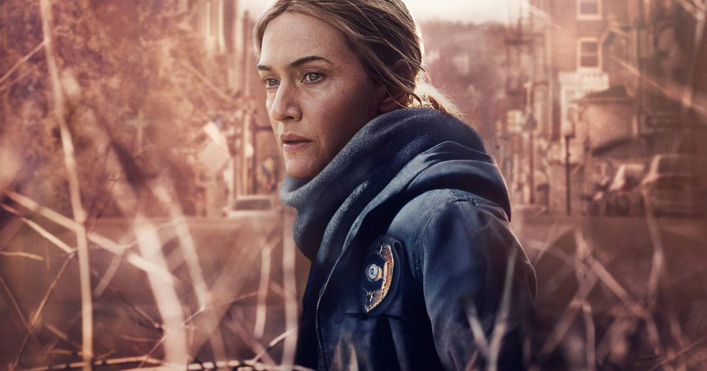
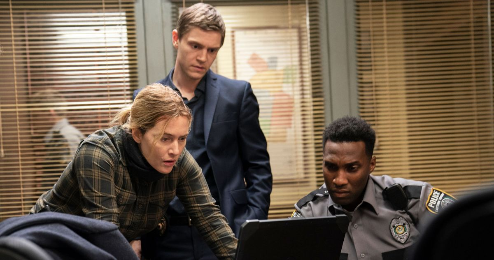

Uma detetive de uma pequena cidade investiga um assassinato local enquanto sua vida desmorona.
Assista o trailer:
Mare of Easttown é uma minissérie estadunidense criada por Brad Ingelsby e estrelada pela atriz britânica Kate Winslet. A minissérie estreou no canal HBO em 18 de abril de 2021 e ficou no ar até 30 de maio do mesmo ano.
São sete episódios que mesclam crimes com relacionamentos, traumas e dúvidas. Todos esses elementos são conectados pelo fato de estarem mal resolvidos. E, no centro de tudo, encontra-se Mare Sheehan.
Nos subúrbios da Filadélfia, a detetive Mare Sheehan, investiga o recente assassinato de uma mãe adolescente enquanto tentava evitar que sua própria vida desmoronasse.
Mare é uma heroína local, tendo sido a estrela de um jogo de campeonato de basquete do colégio há 25 anos. Ela também está tentando resolver outro caso de assassinato há um ano, levando muitos na comunidade a ter uma visão obscura de suas habilidades de detetive. Seus problemas pessoais incluem um divórcio, um filho perdido por suicídio e uma nora viciada em heroína lutando pela custódia do neto de Mare.
Mare of Easttown recebeu aclamação da crítica. No agregador de resenhas Rotten Tomatoes, a série tem um índice de aprovação de 92% com base em 72 resenhas, com uma classificação média de 7,97/10. O consenso dos críticos do site diz: "Com base na melhor carreira de Kate Winslet, as ambições de Mare of Easttown às vezes excedem seu alcance, mas seu mistério central é sustentado por um forte senso de lugar e caráter que quase não importa."
No Metacritic, a série tem uma pontuação média ponderada de 81 em 100 com base nas avaliações de 38 críticos, indicando "avaliações geralmente positivas".
